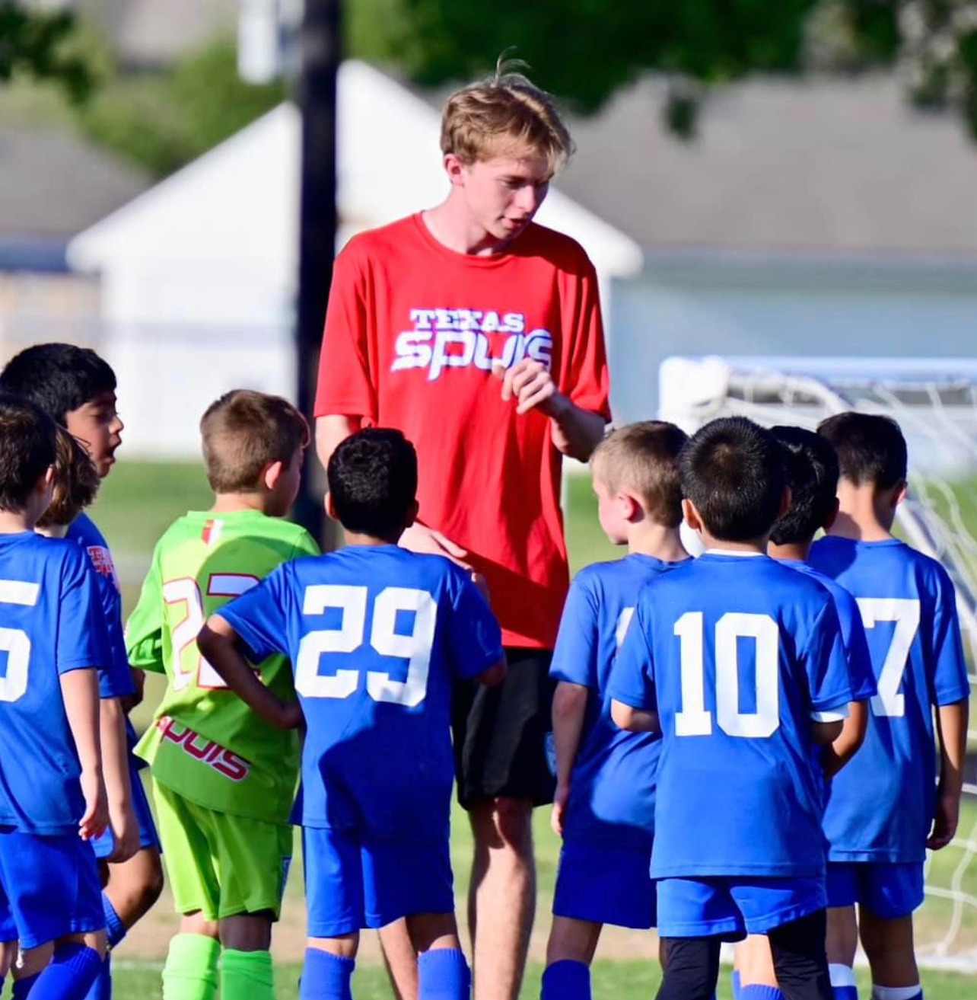
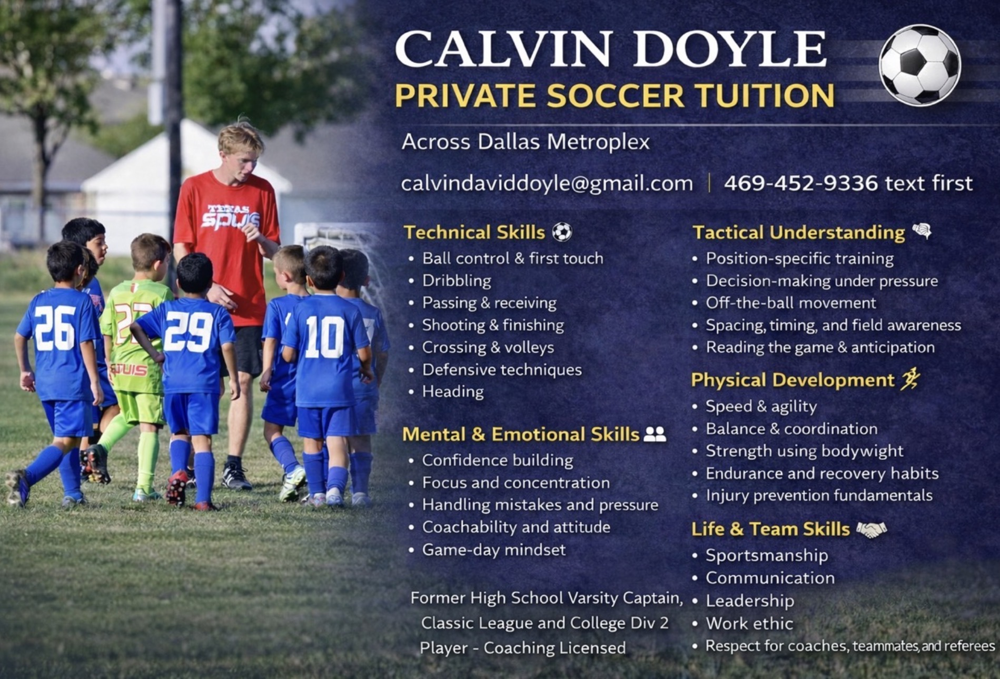

NTX Earthquakes
North Texas U12 Girls Soccer Club
North Texas U12 Girls Soccer Club
NTX Earthquakes is a North Texas girls soccer club focused on player development, confidence, teamwork, tactical awareness, and creating a positive competitive culture.


Former high school varsity captain, classic league and college division player with coaching experience focused on youth development.
View Full Coaching Information
Across from 15013 Crape Myrtle Road
Mondays: 6:00 PM – 7:00 PM
Thursdays: 6:00 PM – 7:00 PM